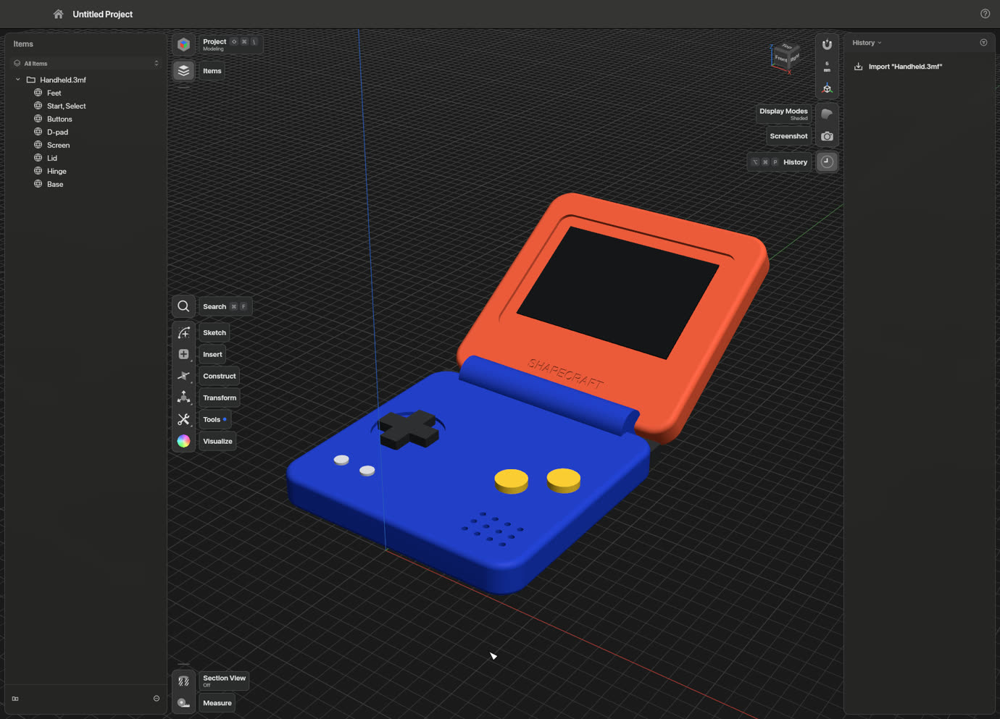
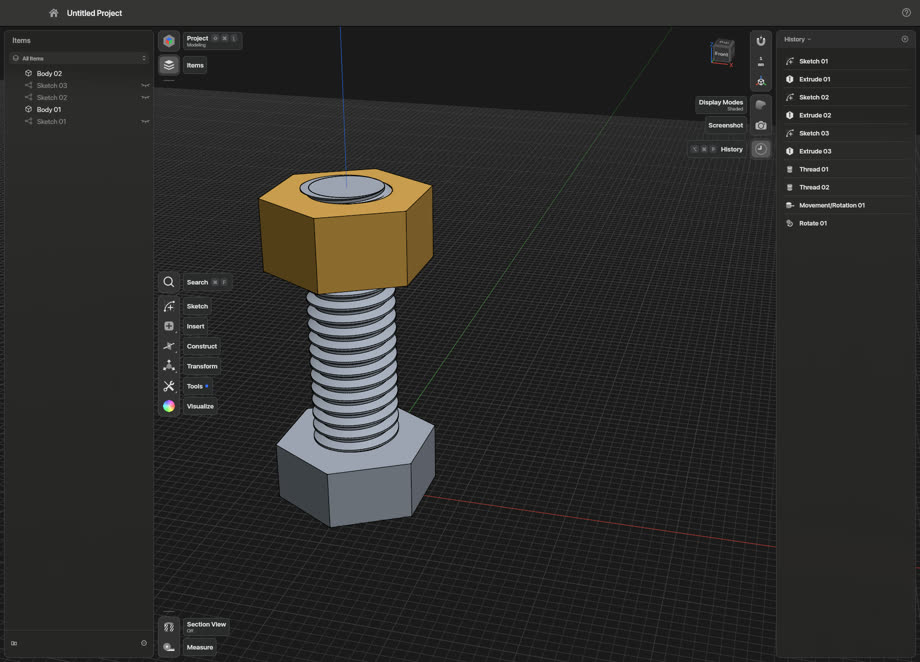
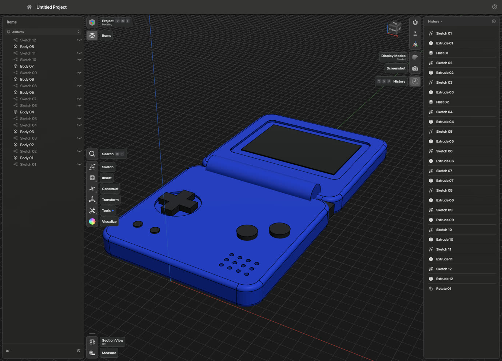
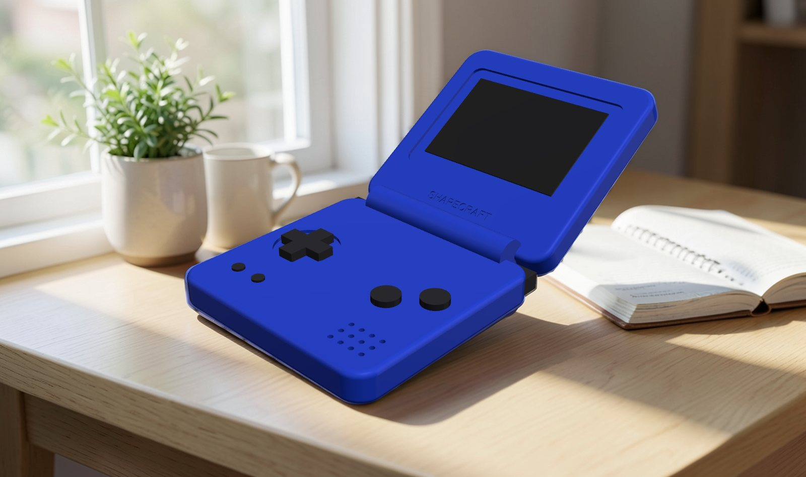

Press kit
Everything here is free to use in coverage of ShapeCraft. Pictures and clips are recordings of the real app, except the scene around the model in the Generative Render one.
In a few words
One sentenceShapeCraft is free, open-source direct-modeling CAD for macOS, Windows, Linux, iPhone Duo and Android, with no account and no cloud.
One paragraphShapeCraft is for making real things: a part for your 3D printer, a box for your electronics, a bracket. Sketch on any face, pull it into a solid, drag an edge to round it, and type an exact number whenever you know one. Every step stays in History and can be changed later. It opens the files people already have (.shapr, STEP, Parasolid, SolidWorks, NX, Solid Edge, JT, STL, OBJ, 3MF) and saves projects as plain folders on your own disk. It works offline, has no accounts, subscriptions or telemetry, and is written in Rust under MIT OR Apache-2.0.
Facts
- Status
- Public alpha, first released in November 2026
- Price
- Free, with no paid tier. Tips welcome.
- Runs on
- macOS 13+, Windows 10 and 11 (x64 and Arm), Linux, iPhone Duo (iPhone: viewer), Android 8+
- License
- MIT OR Apache-2.0
- Built with
- Rust and wgpu; Open CASCADE for geometry, with a pure-Rust kernel in testing
- Automation
- Every button is a command: scripts, a CLI, a JSON channel and a built-in MCP server
- Languages
- Eleven, Slovak complete throughout the interface
- Maker
- Jack Harvest, an applications engineer with more than twelve years in CAD, working with AI coding agents. How it's made
- Links
- Site · Source · Download · Changelog · Discord
Video
Pictures






Logo
SVG · PNG. Please write it "ShapeCraft", one word, capital S and C.


Questions
Ask on Discord or open an issue on GitHub. Bug reports go to GitHub too.
ShapeCraft is independent software and is not affiliated with, sponsored by or endorsed by any CAD vendor or console maker. Product names are trademarks of their owners and are used only to describe file compatibility.